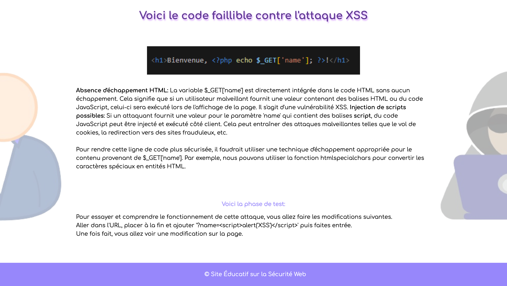

- Esprit d'équipe
- Adaptatif
- Autonome
- Entreprenant
Réalisations
Mes projets
Catchy Party
Réalisations faites au sein de l'iut durant ma formation

Réalisations faites au sein de l'iut durant ma formation
Cybersécurité

Nous devions réaliser un site à but éducatif, répertoriant certaines des nombreuses cyberattaques existantes. Dans notre cas, nous étions chargés de représenter les attaques RFI, CSRF, Injection SQL et XSS. Ce site devait contenir une page vulnérable à ces attaques et une seconde qui, elle, ne l'était pas avec une justification de sa protection contre ces attaques. Le fait de devoir réaliser une page vulnérable et une page protégée permet de comprendre de manière plus approfondie le fonctionnement et le risque de ces attaques.
Musculator 3000
Tout d'abord, Musculator3000 est une application de fitness complète conçue pour les amateurs de musculation et de remise en forme. L'application offre une gamme de fonctionnalités, notamment la personnalisation de programmes d'entraînement, le réglage d'une notification de rappel pour aller à l'exercice et la discussion avec un chatbot. Les utilisateurs peuvent sélectionner des programmes en fonction de leurs objectifs de fitness spécifiques, explorer des exercices ciblés pour chaque groupe musculaire, et accéder à des ressources éducatives sur la musculation. Musculator 3000 offre une expérience dans le domaine du fitness. Les utilisateurs peuvent créer des profils personnalisés, choisir des programmes d'entraînement adaptés à leurs objectifs spécifiques tels que la perte de poids, la prise de masse musculaire, ou le conditionnement général. L'application propose également une fonctionnalité unique permettant aux utilisateurs de visualiser une représentation graphique du corps humain et de sélectionner des zones musculaires spécifiques pour accéder à des exercices détaillés. L'application inclut également un système de notifications personnalisables pour aider les utilisateurs à rester sur la bonne voie avec leurs objectifs d'entraînement. Musculator 3000 vise à fournir une expérience complète, de l'élaboration des programmes d'entraînement à la construction d'une communauté engagée, offrant ainsi une plateforme robuste pour les passionnés de fitness.
SpeedKing
Durant ma dernière année de formation, nous devions réaliser un business model et un business plan d'une entreprise imaginée et créée par nos soins. Dans notre cas, nous étions une équipe de 3 et nous avons choisi de développer l'entreprise SpeedKing, une entreprise de location automobile spécialisée dans la location de véhicules haut de gamme à des prix abordables et vise à rendre accessible aux clients à revenu moyen ou modeste l'expérience de conduire des véhicules de luxe. Notre gamme de services comprend la location de véhicules haut de gamme à bas coûts, la location de limousines, la location de véhicules hybrides et électriques, ainsi que l'organisation de baptêmes de course automobile sur circuits.
Typrotect
Lors de ma première année en BUT MMI (Métiers du Multimédia et de l'Internet), nous avions comme consigne de partir d'une image simple d'un tigre pour en décliner un logo et ensuite concevoir un univers autour de ce logo dans le but de créer une marque fictive. Pour ma part, j'ai opté pour une marque proposant des produits dans l'univers du 2 roues. Pour mettre en valeur ces différents produits et rendre le projet réaliste, je devais utiliser des mockup me permettant de proposer le visuel de ce que je souhaitais mettre en vente. En sachant que nous devions réaliser l'entiereté de l'univers de notre marque, nous devions réaliser une charte graphique ainsi qu'élaborer les différentes protection vis-à-vis du logo, que ce soit la zone de protection ou les déformations interdites.